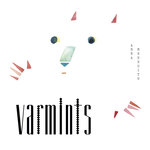

Quick Takes (March 2016)
It's that time again when writers Juan and Carl go through their previous month's custom playlists in search of a handful of albums that deserve your attention. After being a bit tough with some of last month's notable electronic offerings, it's curious to see that Juan's two highest scores out of his five selections fall under the same rubric (one of them being the glorious return of elder statesmen Underworld). He also went on an emo revival (or let's just call it indie rom-rock) binge from listening to too much Into It. Over It (just check his Spotify; the proof is there). Carl, on the other hand, wasn't too impressed with one of last month's most hyped releases (HÆLOS), although he effusively enjoyed the terribly overlooked self-titled debut from Koi Child. And this time around, two records did manage to get out "Believe the Hype" stamp of approval.
...
Anna Meredith
Varmints
(Moshi Moshi Records)
It’s a bit of a misnomer to describe Varmints as a “debut” for Anna Meredith, seeing as she’s a well-respected classical composer who currently stands as a composer-in residence for the BBC Scottish Symphony Orchestra. Nevertheless, it’s her first official foray into so-called pop territory, and even that’s a bit of a stretch coming from an artist who incorporates synthesized mini-suites with unusual experimental touches. But Meredith unquestionably tries her hand at a sound that is somewhat representative of our current pop climate, albeit smeared to a point where it’s almost unrecognizable, incorporating a whole gamut of styles that range from askew Euro-pop bangers (Something Helpful) and cerebral collage techniques (R-Type) to utterly beguiling progressive arrangements (Shill) and lush, ethereal disco that comes close to kpop (Last Rose). It’s a lot of take in, but surprisingly it all blends together seamlessly with structural expertise. Varmints is a playfully delirious listen that constantly rewards with new ideas at every corner, one that sketches an idealized pop landscape without recognizing that it actually touches all of its requisite pleasure points. [8/10 - Believe the Hype] Juan Edgardo Rodríguez
 Big Ups
Big Ups
Before a Million Universes
(Tough Love Records)
With all the recent genre upholstering that’s been going on of late, I must admit I’d never see the day that contemporary bands would strictly follow the bitter crunch of post-hardcore. Even Big Ups would probably seem a bit surprised themselves, as their debut album Eighteen Hours of Static had more of a manic, stop-and-go grunge energy. The signs were surely there, and on their latest, entitled Before a Million Universes, the Brooklyn foursome couldn’t be more serious about restructuring the house that Slint built. So it’s unfortunate to see how the band’s efforts on Universes are spent on homage rather than on furthering their craft with its aggravated ideological breakdowns, seeing as their debut was chasing different endeavors, all of them pointing to a potentially innovative treatment the genre hasn’t seen in over two decades. But Universes is so stringent and cautious in its design that it’s difficult to distinguish its true intent, where Joe Galarraga’s whispered sing-speak and battering discord play too much of an emphasis on aesthetics. The whole of it is too calculated, even if they occasionally hit the mark with an obvious attention to craft which, to be fair, certainly counts for something. [6/10] Juan Edgardo Rodríguez
Desert Mountain Tribe
Either That or the Moon
(Membran)
Either That or the Moon is the debut LP from Anglo-German trio Desert Mountain Tribe, and it boasts guitars as far as the ears can hear. Its kaleidoscopic, driving rock anthems are drenched in acid, evoking the mid-nineties sounds of Ride if they’d been galvanized by a psychedelic power station. The album was recorded directly to tape before being mastered by Black Angels sound engineer Brett Orrison, and the effect is one of a no-holds-barred, fiercely intense torrent that would be best served in a stadium, where nothing would inhibit the giant anthems from soaring into giddy stratospheres. Desert Mountain Tribe borrow an awful lot from psychedelic rock bands of the past without tweaking tried and tested blueprints too much, and while that isn’t a bad thing when it’s executed well, it does limit the lucidity of an identity formed by a new band tapping into them. It’s been a long time since guitars covered this big of an expanse. [6/10] Carl Purvis
Emmy the Great
Second Love
(Bella Union)
London singer/songwriter Emma Lee-Moss, better known as Emmy the Great, is an entirely likable narrator whose bittersweet songs usually illustrate a polarity between peculiar fun and earnest poignancy. She excels at writing compact, meaningful prose with a touch of sadness, a quality that shines when it’s set against elegant folk backdrops. On the other hand, there’s always a good amount of mush in her past efforts that recalls most of the Litith Fair alumni with its bathetic emotionalism. Emmy’s latest, Second Love, could very well suggest a craving to course an entirely new musical path, as every track offers a dollop of experimentation that keeps its brisk running time constantly interesting. And yet this is also the first time she’s not forcing an identity that’s offbeat for the sake of it, wholly embracing a spry, intimate pop style that suits her. Some of it doesn’t work (the light, faux-R&B of Dance W Me and the low-key ambience of Phoenixes come to mind), while other times the clever sonic touches are simply irresistible (the soft sway of Algoriths). If only she would’ve toned down the unnecessary sensual flourishes to cultivate more of what she does best: amiable, pleasant songs with outwardly simple, yet weighty underlying truths. [6/10] Juan Edgardo Rodríguez
HÆLOS
Full Circle
(Matador)
Full Circle is a debut LP that shows a band inherently secure in their own sound. It’s a metropolitan take on the fertile British 90s electronic scene, incorporating the suppressed breakbeat dynamic of Massive Attack and a ghostly delivery of shared vocal duties. Keyboards and synths swell and wane like a tide as the album progresses, and the whole effect results in seductive, rich soundscapes for the duration. Without doubt, though, the London three-piece have an awful lot of room to grow. Full Circle is stylish in the extreme, nailing the post-electronic comedown motif, but the substance isn’t always there. The sound HÆLOS have refined is the perfect foil for truly spectacular things to happen, but with the exception of the album’s centerpiece, Oracle, Full Circle consistently gives the impression that the tools aren’t being used as efficiently as they could be. Make no mistake, this is a hugely promising debut, and the fact that HÆLOS have so much room to grow makes them an intriguing prospect. [6/10] Carl Purvis
 Into It. Over It
Into It. Over It
Standards
(Triple Crown Records)
In trying to change the course of Into It. Over It, Chicagoan Evan Weiss couldn't have chosen a better recording partner than John Vanderslice. The San Francisco-based producer’s sensitive approach to melody makes a perfect pairing for Weiss’s understated confessionals, which in Standards coalesce musically between micro-atmospheric instrumentals and slightly askew pop rock dynamics. Weiss never takes things too technical, however, opting for a cinematic, if even narcoleptic in its hazy airlessness, mood reminiscent of Death Cab For Cutie circa Photo Album/Transatlanticism. Standards is certainly a sobering listen, one that highlights Weiss’s wordy, forlorn poetry in twitchy, math rock refrains (Required Reading and Adult Contempt) and unplugged contemplative balladry (Anesthetic). Weiss is a smart, heartfelt performer whose stories rarely veer into overwrought territory, though the lukewarm acoustic fluff that occasionally lingers throughout Standards bogs down an otherwise affecting and perceptive listen. [7/10] Juan Edgardo Rodríguez
 Kendrick Lamar
Kendrick Lamar
untitled unmastered.
(Aftermath)
Released out of the proverbial blue, untitled unmastered. is a collection of demos recorded around the same time as To Pimp a Butterfly. The tracks don’t have the cinematic grandeur of those that made that album, but the dark, stalking hypnosis of the ‘untitled’ tracks that didn’t make the cut only serve to further display Lamar’s stratified, multi-faceted genius. Throughout it’s 35-minute runtime, it extraneously connects itself to TPAB, almost emerging as an understated afterword to one of the best albums of a generation. Lamar’s sprawling, reductive segues roam around stunning, downplaying grooves, and although the record lacks the plenitude of a truly great album, it manages to entice and enthrall undividedly. Kendrick Lamar’s talent is superficial in the extreme, plumbing his own creative depths with an unerring attention to detail. With untitled unmastered., he has found another way to sheathe people in his compelling vision. [8/10 – Believe The Hype] Carl Purvis
 Koi Child
Koi Child
Koi Child
(Pilerats Records)
Koi Child are a brain child of Kevin Parker, and that alone is testament to the potential in their ranks. The Freemantle seven-piece are made up of two active bands: Nu-jazz quartet Kashikoi, and hip-hop trio Child’s Play. Parker saw the two bands having an impromptu jam, loved it, asked the union to support Tame Impala, then produced their debut album. Voila. The fusion of the two bands' styles is mesmerizing. The old-school hip-hop of Child’s Play evokes the likes of Jurassic 5 and De La Soul, but in Western Australia it’s sun-soaked, and caressed by the Freemantle Doctor. Kashikoi’s influence drenches the grooves in a deluge of brass and jazz, and it truly is a match made in heaven. Rapper Shannon ‘Cruz’ Patterson is in his element with such an adept set-up behind him, working leisurely from his own time-zone, and Parker’s studio wizardry is prevalent from start to finish. Compact, condensed drums are impeccably mixed, with meticulous phasings and superb breakdowns all bearing the Parker signature. Everything he touches turns to gold, and if we needed any further evidence following Currents, he has shown once more that he has no contemporaries in a studio. One of the best records of 2016 so far. [9/10 – Believe The Hype] Carl Purvis
 RJD2
RJD2
Dame Fortune
(RJ’s Electrical Connections)
Philadelphia-based producer Ramble Jon Krohn manages to cover a time-span of over 2000 years with his sixth solo studio album. Anchored in psychedelic funk, he manages to take us back to the 70s soul of Rick James right through to the sci-fi sounds of a future millennium with consummate ease, firing light through holes in dark canopies and punctuating breakneck chapter shifts with edgy percussion. As with most of RJD2’s work, it’s challenging to keep up to speed with the notional changes in direction, with tracks landing in different worlds from where they were launched. The mix of jazz, funk and R&B is always a winning combination, but Dame Fortune lacks something to take it from being a good record to a very good record. The hastiness and outlandishness of the swerving soundscapes are the album’s strengths and it’s weaknesses, simultaneously keeping a listener enticed and running them ragged. Such zeal keeps Krohn’s final destination on the horizon, just out of reach.[6/10] Carl Purvis
Underworld
Barbara, Barbara we face a shining future
(Caroline Distribution)
Underworld have always provided an evocative platter of beat-driven, highly kinetic dance music. The electronic veterans have been releasing records at a steady pace for the past twenty seven years, though what’s most surprising is how they’ve transitioned back to a back-to-basics approach after taking on the monumental task of serving as musical directors for the 2012 Summer Olympics in London. Now, that’s not to say that they’re relying on past glories with a slick, though unpredictable new batch of songs. In fact, it’s quite the contrary, as every single track off of Barbara, Barbara we face a shining future finds a good amount of reasons to believe the UK duo are just as relevant as the young beat makers they’ve influenced. From the thumping, industrial charge of I Exhale to the sublimely hypnotic techno of Low Burn, Underworld are in full form, giving meaning and substance to every single minute with hardly a wasted moment. The latter half of Barbara takes a more familiar turn, as Ova Nova drifts by smoothly with an Euro-pop groove that’s both likable and familiar. It all leads up to the grand finale Nylon Strung, arguably one of their best songs in years, a gorgeous expression of pure, unadulterated rave music that will find its place in many a lost night. It’s the perfect way to take a final bow after a long and rewarding career, though something tells me they’re still looking beyond the horizon; newly invigorated, yet always searching. [8/10] Juan Edgardo Rodríguez
5 April, 2016 - 04:25 — No Ripcord Staff